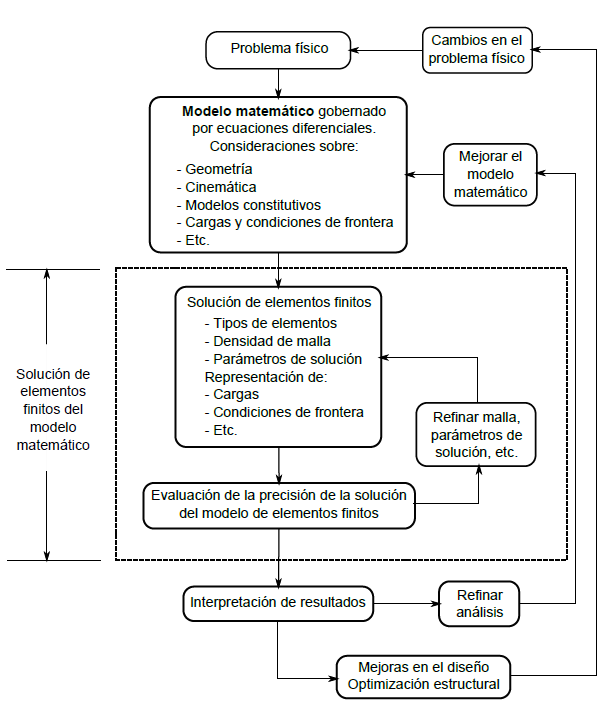

Implementación del MEF en problemas de ingeniería
El método del elemento finito es utilizado para resolver problemas físicos en análisis de ingeniería y diseño. La figura mostrada enseguida esquematiza el proceso del análisis por elementos finitos. El problema físico típicamente involucra una estructura o ciertos elementos mecánicos sometidos a condiciones de cargas establecidas. La conversión del problema físico a un modelo matemático correspondiente requiere que se hagan consideraciones para la simplificación y resolución de las ecuaciones diferenciales resultantes. El análisis de elementos finitos resuelve ese modelo matemático resultante. Puesto que la solución por elemento finito involucra un procedimiento por técnicas de análisis numérico es necesario evaluar la exactitud de la solución. Si no existe un criterio de exactitud o punto de comparación, la solución numérica debe repetirse refinando algunos parámetros (como la densidad de malla) hasta que las variaciones entre soluciones sean aceptables.

Está claro que la solución por elementos finitos resolvera sólo el modelo matemático establecido y la respuesta del sistema reflejará las consideraciones o simplificaciones realizadas a este. La selección de un modelo matemático apropiado es crucial y determina completamente la percepción actual del fenómeno físico que puede obtenerse mediante el análisis. Luego, es claro que, naturalmente, la respuesta de problemas solucionados mediante técnicas de elemento finito no corresponderán exactamente con la situación real, dado que es casi imposible reproducir las condiciones de un entorno tomando en cuenta todas las variables que inciden en el proceso, en la mayoría de los casos se tendrá una comparación basada en la correlación o correspondencia entre la respuesta matemática y la experimental.
Una vez que el modelo matemático ha sido resuelto y los resultados han sido interpretados, se puede entonces considerar la refinación o redefinición del modelo matemático para considerar otros factores que permitan obtener una solución más ajustada a la realidad.
Para definir la confiabilidad y efectividad de un modelo seleccionado debemos pensar en un modelo matemático muy completo del problema físico y medir la respuesta de nuestro modelo seleccionado contra la respuesta del modelo completo. En general, un modelo matemático completo incluye una descripción tridimensional del problema e incluye efectos no-lineales.
Para evaluar el resultado obtenido por la solución de un modelo matemático seleccionado, puede ser necesario también resolver problemas de modelado matemático de orden superior, e incluso ir incluyendo cada vez factores más complejos. Por ejemplo, una viga estructural puede primero analizarse usando la teoría de la viga de Bernoulli, luego usando la teoría de una viga de Timoshenko, siguiendo con una análisis bidimensional por la teoría de esfuerzo plano, y finalmente utilizando un modelo tridimensional continuo, y en cada caso la posibilidad de incluir efectos no lineales.
Claramente con esa jerarquía de modelos, enunciada en el párrafo anterior, el análisis incluirá cada vez respuestas más complejas, incrementando consecuentemente el costo de la solución. Es conocido que un análisis tridimensional es alrededor de un orden de magnitud más costoso que el caso bidimensional, tanto en recursos computacionales como en el tiempo de ingeniería realizada.